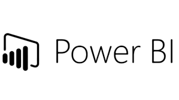

"The data cleaning project in SQL involves assessing the dataset's quality, profiling the data, validating it against predefined rules, cleaning the data by correcting errors and filling missing values, removing duplicates, and transforming the data as needed. SQL queries are used throughout the project to identify and resolve inconsistencies, ensuring the dataset's accuracy and reliability. The project aims to enhance the data's integrity, consistency, and completeness, enabling more reliable analysis and decision-making based on the clean dataset."

Data exploration in SQL involves analyzing and understanding the dataset's characteristics, patterns, and relationships. It includes querying the database to retrieve summary statistics, examining data distributions, identifying outliers, exploring correlations, and visualizing the data using SQL-based functions and tools. Through SQL queries, data exploration helps in gaining insights, identifying trends, and discovering valuable patterns within the dataset.

The Power BI dashboard for customer churn analysis provides a comprehensive view of customer retention and attrition patterns. It includes visualizations such as churn rate trends over time, customer segmentation based on churn probability, reasons for churn, and customer lifetime value analysis. The dashboard utilizes interactive charts, graphs, and slicers to enable users to drill down into specific customer segments or time periods for deeper insights.
.jpg)
The Excel dashboard for sales metrics provides a comprehensive overview of key performance indicators (KPIs) related to sales performance. It includes visualizations such as sales revenue trends, top-selling products or services, sales by region or territory, sales conversion rates, and sales growth rates. The dashboard utilizes charts, graphs, and tables to present the data in a visually appealing and easy-to-understand format. Users can filter and analyze the data based on various dimensions such as time period, product category, or sales representative.